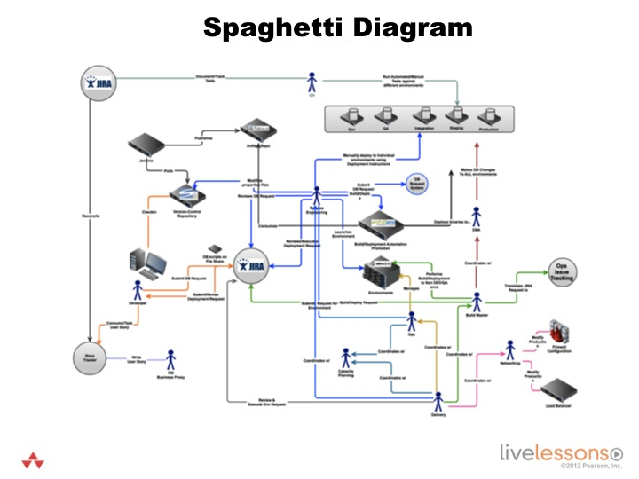
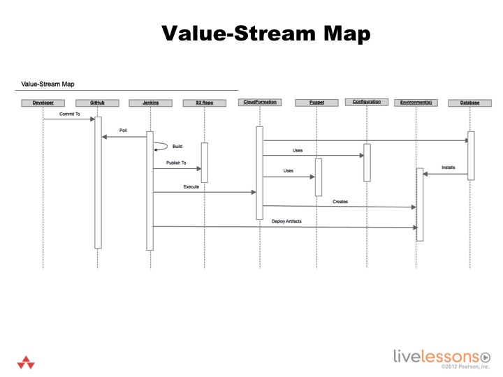

            <div class="container-fluid">
                <div class="row">
                    <div class="col-lg-12 col-xs-12">
                    <!-- Main Body Content -->
                    <h2 class="page-title bg-primary">2.3 - Diagrams</h2>
                   <!-- inner body -->
                <div class="inner-body panel">
                    <h4 class="sub-heading">Learning Objectives</h4>
                    <p>By the end of this lesson you will be able to -</p>
                     <ul class="edited-ul">
                        <li>Create a ‘spaghetti diagram’ for modeling the "as-is" state.</li>
                        <li>Create a ‘value-stream map’ for modeling the "to be" state.</li>
                    </ul>
               </div>  
                     </div>
                     </div>
                 </div>
            <!-- inner body ends here -->  
             <!-- container-fluid start here -->
                <div class="container-fluid">        
                    <div class="row">
                        <div class="col-xs-12 col-md-6">
                            <h4 class="bg-info secondary-header">Spaghetti Diagram</h4>
                        <div class="text-center">
                    
                        </div>
                        </div>
                        <div class="col-xs-12 col-md-6">
                         <h4 class="bg-info secondary-header">Value-Stream Map</h4>           
                        <div class="text-center">
                            
                        </div>
                        </div>
                </div>
            </div>
            <!-- container-fluid ends here -->
       <!--  main div box close here--> </div>
        <!-- Page Content Wrapper--> </div>
    <!-- /#wrapper -->